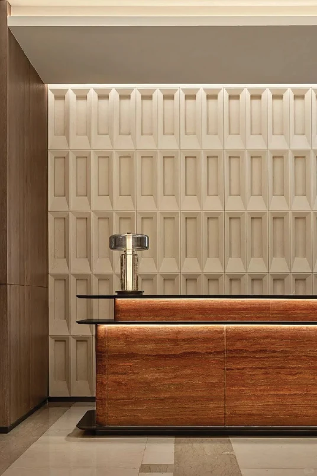
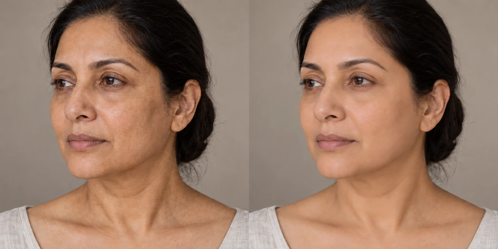
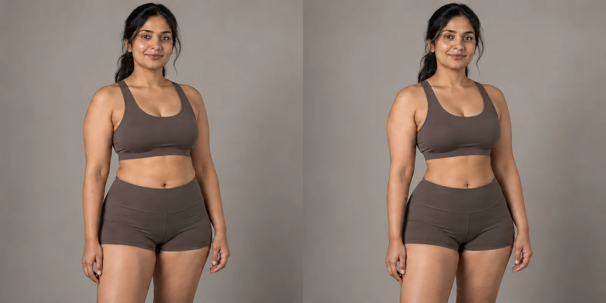
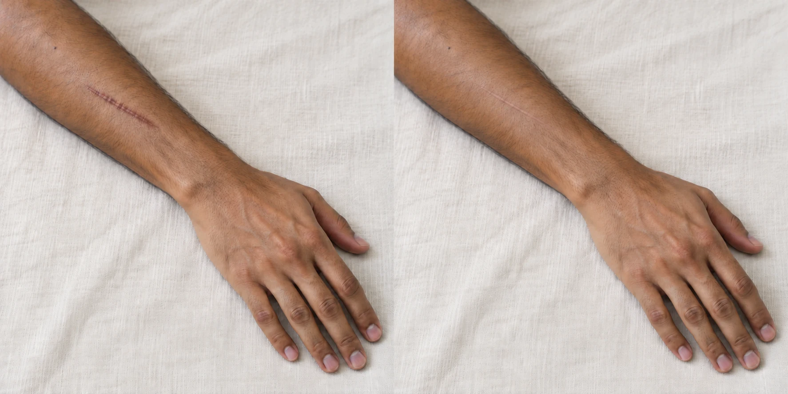

Plastic, Reconstructive & Cosmetic Surgery
Modern Cosmetic Surgery,
Helping You Feel
Like Yourself
Cosmetic and reconstructive care in Mysuru, tailored to your needs and personal goals.
Precision-led care
Natural aesthetics
Patient-first approach
The surgeon
Dr. Anudeep
T Channaiah
Founder of Mysore Aesthetics.
Plastic, reconstructive & cosmetic surgeon.
MBBS · MS · MCh · DrNB
Specialist training in plastic and reconstructive surgery in Mumbai, following medical and general surgical training in Mysore. Further aesthetic surgery fellowships in India, Brazil and Colombia.
- Plastic Surgery
- Reconstructive Microsurgery
- Aesthetic Surgery

Philosophy
An approach
built around you.
Surgery, when practised with genuine care, is not merely a technical act — it is a commitment to another person's wholeness. Every incision carries a responsibility as profound as any work of art.
Dr. Anudeep T Channaiah
Clinical Expertise
Explore care for changes you’re considering, concerns you’re living with, or recovery after injury or illness.

Visit the practice
Mysore Aesthetics
You don’t need to know which procedure to choose. Start with what’s concerning you and what you would like to understand.
Consultations in Kannada, English, Hindi and Marathi.
Location
Saraswathipuram, MysuruGet directions
Patient feedback
“You’ve been so good to me and helped me through all of this time. Thank you for being the best…”
Yogesh BJ
Read patient reviewsGallery
Your goals. Your journey.
Explore cosmetic and reconstructive care through the concerns and goals that matter to you.

BeforeAfterFace, natural balance
Discuss the facial features and proportions that matter to you.

BeforeAfterBody, shape & proportion
Explore options that align with your body goals.

BeforeAfterReconstruction, individual care
Learn about reconstructive care for your individual needs.
A moment at Mysore Aesthetics
A little closer
to the clinic.
Skin, hair and everyday care—with Dr. Madhurya Santosh and Mysore Aesthetics.
@aestheticsmysoreCare centred on you
A conversation about your concerns, your options and what may be right for you.